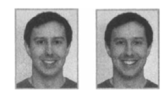

EK II-YALAN YAKALAMA BECERİLERİNİZİ TEST EDİN
Profesyonel bir yalan dedektifi olduğunuzu düşünüyor musunuz? Becerileriniz gerçek dünyada gerçek anlamda sınanacak ama aşağıdaki sorular sizi bu kitapta ele alınan yalan yakalama esaslarının bazılarından imtihan edecek.
Cevapları www.Liespotting.com adresinde bulabilirsiniz. Bol Şans!
Aşağıdakilerden hangisi en az güvenilir hile göstergesidir?
 Konuşurken tanımlayıcıların varlığı veya yokluğu
Konuşurken tanımlayıcıların varlığı veya yokluğu
 Ses niteliği
Ses niteliği
 Yüzdeki mikro ifadeler
Yüzdeki mikro ifadeler
Yapmacık gülümsemeler
Doğrudan “Geçen cuma öğleden sonra ofisten kaçta ayrıldın?” sorusu sorulduğunda, aldatıcı birisinin şunu yapması daha muhtemeldir:
 Cevap vermeden önce soruyu olduğu gibi tekrarlamak
Cevap vermeden önce soruyu olduğu gibi tekrarlamak
 Cevap vermeden önce sorunun birkaç kelimesini tekrarlamak
Cevap vermeden önce sorunun birkaç kelimesini tekrarlamak
Aldatıcı bir insan soru sorulduğunda sizinle doğrudan göz temasından kaçınacaktır:
Doğru
 Yanlış
Yanlış
Bu iki gülümsemeden hangisi gerçek, hangisi yapmacıktır?

Birisinin açık bir soruya yanıt olarak “Dürüst olmak gerekirse...” demesi:
 Muhtemelen hakikati söylediğini gösterir
Muhtemelen hakikati söylediğini gösterir
 Yalan söylediğini veya bir şeyi atladığını gösterir
Yalan söylediğini veya bir şeyi atladığını gösterir
Birisine bir şeyi “niçin” yaptığını sormak yerine, savunmacı bir yanıtı en aza indirgemek için sorunuzu nasıl ifade etmelisiniz?
Yapmacık gülümsemeler hangi kaslar hareketsiz olduğu için kolayca teşhis edilebilir?
 Gözü yörüngeye oturtan kaslar
Gözü yörüngeye oturtan kaslar
 Ağzın kenarlarındaki kaslar
Ağzın kenarlarındaki kaslar
 Çene çevresindeki kaslar
Çene çevresindeki kaslar
Bir insan yalan söylerken, hilesini açığa çıkarabilecek hataların şunlarda bulunması ihtimali yüksektir:
Hikâyesinin sözcükleri
Sözsüz davranışı
Hangi belli başlı yedi duygu yüzde bütün dünyada aynı şekilde ifade edilir?
Yalan söyleyen insanlar çoğunlukla istemdışı doğruyu söylerken yaptıklarından daha fazla göz kırparlar.
 Doğru
Doğru
 Yanlış
Yanlış
Hilenin aşağıdaki sözlü ipuçlarından hangileri Bill Clinton’ın meşhur yalanlamasında var: “O kadınla, Bayan Lewinsky’yle cinsel ilişkim olmadı.” (I did not have sexual relations with that woman, Miss Lewinsky.)
 Uzaklaştırma cümlesi
Uzaklaştırma cümlesi
 Belirgin inkâr
Belirgin inkâr
 Kısaltılmamış inkâr
Kısaltılmamış inkâr
 Yukarıdakilerin hepsi
Yukarıdakilerin hepsi
Yedi temel duygudan hangisi gerçek halinde asimetrik bir ifade olarak görülür?
Aşağıdakilerin gerçek bir hikâyede mi yoksa aldatıcı bir hikâyede mi bulunmasının daha muhtemel olduğunu seçin.
Gerçek Yanıltıcı
Ayrıntılı giriş
Kronolojik düzen
Duygu ifadesi
Hareketlerle açıklama
Sonsöz
Ayrıntılı esas olay
TEŞEKKÜR
Bu kitap çok çalışkan, zeki bir araştırmacı, yazar ve editör ekibinin yardımıyla yazıldı. Özellikle Stephanie Land metnin ağırlık noktasını şekillendirmeye, düzenlemeye ve keskinleştirmeye yardım etmek için uzun saatler harcadı. Onunla çalışmak bir zevkti, kendisi olağanüstü bir yetenek. Ann Hodgman da kıvrak zekâsı, derin araştırması, görüşme becerileri ve yazınsal becerileriyle çok büyük katkıda bulundu. Her ikisi de asıl Yalanı Anında Yakalayın araştırma ekibinin en önemli üyeleri olan Mark Malseed ve Eric Hundman, Yalan Yakalama’nın asıl düşünce liderleri olarak görev yaptılar; araştırmayı derlediler, çalışmaları gözden geçirdiler, verileri topladılar, kötü fikirleri reddettiler ve iyi olanları ilave ettiler. Bu kitaba iyi niyetli katkılarından dolayı onlara müteşekkirim ve bu kadar yetenekli bir ekiple çalıştığım için çok şanslıyım.
Phil Revzin, Kylah Goodfellow NcNeill, Nadea Mina ve St. Martin’s Press’deki ekip tam manasıyla görülmeye değerdi ve ben bu projeyi destekledikleri ve yol boyunca sadece güzel fikirler ve faydalı yardımlar kattıkları için onlara minnettarım.
Olağanüstü becerileri olan fotoğrafçı Cindy Truitt fotoğrafları doğru çekmek, fazladan çekimler yapmak, düzenlemek ve birçok sefer tekrar tekrar netleştirmek için yorulmak bilmeden çalıştı.
Destek ve cesaret verdikleri için Amy Hertz ve Lisa DiMona’ya teşekkür etmek isterim. Amy, kitabın içerğinden bahsettiğim ilk inan ve en başından beri bir dost ve destekçi oldu. Beni perde arkasından doğru tarafa yönlendiren Lisa,Yalanı Anında Yakalayın’ın sessiz koruyucu meleği oldu.
Birkaç yetenekli insan bu kitabın ilk nüshaları üzerinde çalıştı: Lawrence LaRose, Jeff Himmelman ve Mickey Butts. Mitch Gordon, Eric Rayman, Suzanne Levy, Vena Trehan, Jeffrey Harper, Mark Schapiro, Dana Ardi, Bill Tonelli ve John Podhoretz, hepsi cömertçe zamanlarını verdiler; malzemeyi gözden geçirdiler, hikâyelerini ödünç verdiler, fikir ve kavramları ustalıkla işlediler, uzmanlık sundular.
Ayrıca, bu projenin başından beri ofisin bütün eksik parçalarını bir arada tutan yardımcım Alan Lightfeldt’e ve kitap son aşamalarındayken evimize özel sihirlerini getirmeye yardım eden Amarech Haile ve Yashema Evans’a özel olarak teşekkür etmek istiyorum.
Aileme sürekli destek ve cesaret verdikleri için yürekten teşekkür etmek isterim: sevgili kızım Johanna’ya, evimizden neşe ve kahkahayı eksik etmediği için. Babam Jerome Meyer ve eşi Naomi ve kız kardeşim Cindy ve kayınbiraderim Robin’e, kitabın başlangıcından beri bu kadar cesaret verici oldukları için. Ve en çok da bu kitabın her aşamasında tutkulu bir destekçi, yapıcı bir eleştirmen ve sevgi dolu bir hayat arkadaşı olan harika eşim Fred’e.
YAZAR BİLGİSİ
Pamela Meyer
Çevrimiçi sosyal iletişim ağlarını işleten öncü bir özel marka sosyal ağ şirketi olan Simpatico Networks’ün kurucusu ve CEO’sudur. Harvard’dan işletme yüksek lisans derecesine ve Claremont Yüksek Lisans Okulu’ndan Kamu Politikaları dalında yüksek lisans derecesine sahiptir ve yeminli dolandırıcılık müfettişidir. Hileyi tespit etmek için görsel ipuçları ve psikoloji kullanımı konusunda kapsamlı eğitime sahiptir.